AIで作った教材の、売上です。
- 販売を始めて30日間: 19部・21万3,680円
- 発売から54日間(10月19日まで): 80部・103万2,420円(100円の小さなツール17部をふくむ)
手取りの利益は、95.8万円になりました(95万8,743円。小数点2けた目から下は切り捨て)。
(利益は、売上から販売サイトの手数料を引いた手取りです。AIの月額などは引いていません)
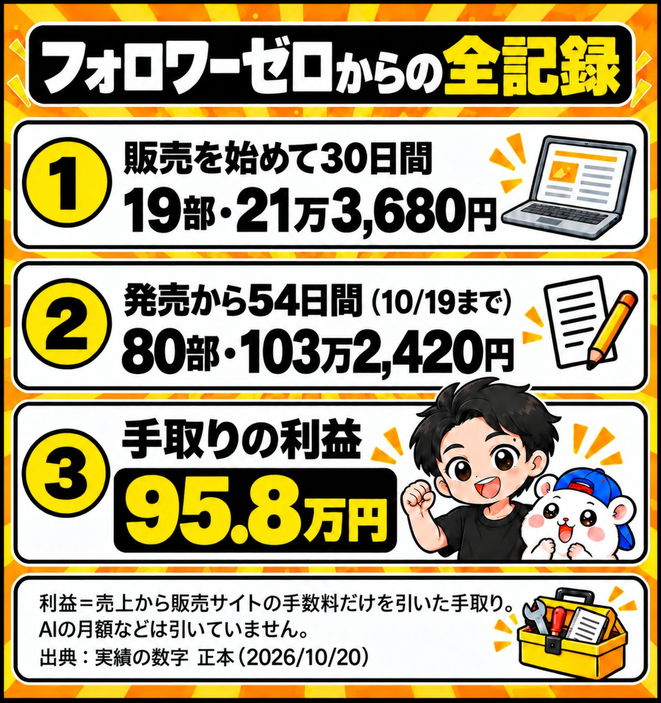
始めたときのXのフォロワーは、ゼロ。 アカウントを作ったのは、7月と8月です。 1ヶ月目の終わり(9月24日)でも、フォロワーは2つ合わせて約190人でした。
▼eBay輸出の専門アカウント(7月に開設)
▼レンタルスペースの専門アカウント(8月に開設)
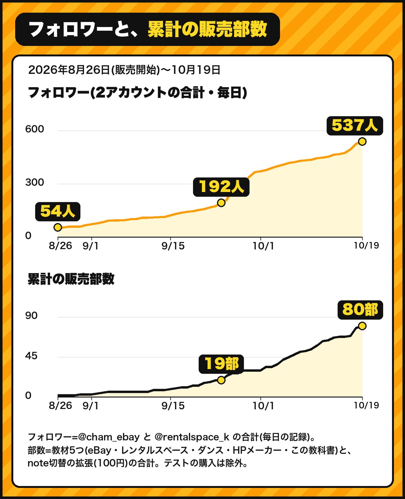
ぼくは、無名です。 名前の知られたインフルエンサーではありません。
そんな無名で、しかもフォロワーゼロのぼくが、54日間で利益95.8万円を出しました。
教材の下書きは、AIが書きました。 修正・追加は、ぼくがやっています。 告知のポストも、販売ページも、売れたあとの手続きも、ほぼAIに任せています。
この教科書は、そのやり方をまとめたものです。
第0部は、無料です。 書いてあるのは、3つです。
- この教科書のコンセプトと、AIでコンテンツ販売をする7ステップ(うちの数字と失敗つき)
- この教科書の中身(本文の目次と、付録)
- この教科書が向かない人
「自分にもできそう」と思ったら、第1部へ。 「ちょっとちがう」と思ったら、ここで閉じて大丈夫です。
0-1 AI×◯◯を、AIで教材にして売る
いちばん大事なことを書きます。
AIにゼロから書かせた教材は、売れません。
調べれば出てくることしか、書けないからです。 ググれば分かることに、お金を払う人はいません。
売れる教材の中身は、「自分が実際にやったこと」です。
では、何をやればいいのか？ いまのBrain(教材の販売サイト)の、人気の記事を見てください。
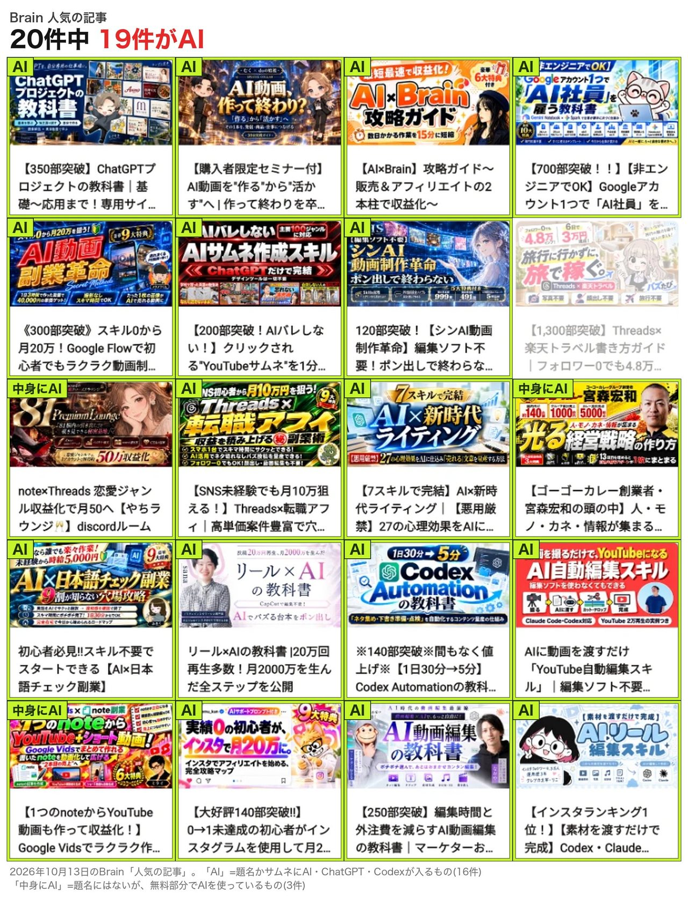
20件中19件が、AIを使って◯◯をする教材です。 AIでサムネを作る。 AIで動画を編集する。 AIで文章を書く。
つまり、売れている商品の本体は、「AIを使って◯◯をする」ことです。
AIで教材を作って売るのは、そのための手段にすぎません。
自分が売りたいものではなく、 いま、みんなが知りたいことから考える。
マーケットインで考えることが、大事です。
AI×◯◯でできたこと・成果が出たことを、 AIで教材にして、コンテンツとして販売する。
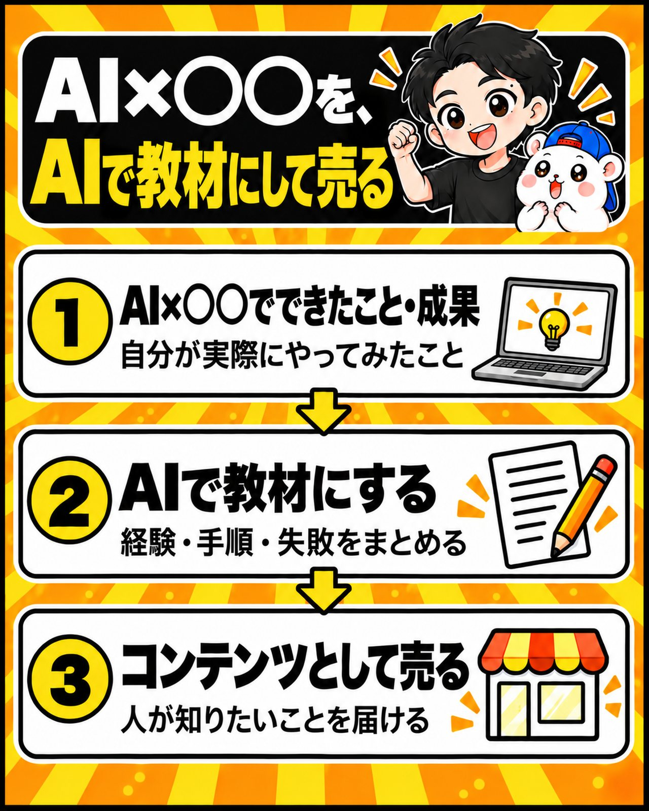
これが、この教科書のコンセプトです。
◯◯の見つけ方(3つ)
-
本業・できること・趣味から、人が知りたいことを選ぶ: 自分が教えたいことではなく、人が「知りたい」「やってみたい」と思うことです。Googleの検索ボリュームや、Brainやnoteにある教材の数で確かめます
-
思い当たらなければ、定番の副業か、AIの使い方をやってみる: せどりやネットショップのような定番の副業でも、画像生成・動画編集・ホームページづくりのような「AIでつくれること」でもかまいません。どちらも、やり方がもうネットに出回っています。出回っているからこそ、AIに集めさせて、そのとおりに再現できます。稼ぐところまでいかなくても、「AIでこれがつくれた」は実績になります
-
ジャンルまるごとではなく、細分化して探す: 「動画編集」はAIの教材だらけでも、「サムネだけ」「台本だけ」のように特化することで、チャンスが見つかります
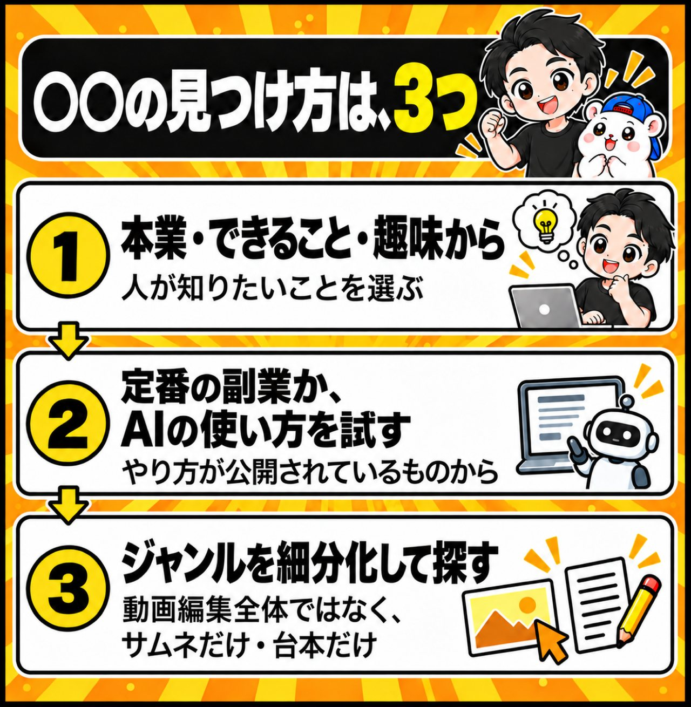
くわしい探し方と、AIへの頼み方は、第1部に書いています。
ぼくの場合
ぼくの本業は、レンタルスペースの経営です。 これまでに23店舗を出してきました。 AIフル活用で日々運営しています。
副業では、eBay(海外向けのネット通販)で物販をしています。 こちらは、梱包と発送以外を、すべてAIに任せています。
この2つのノウハウを、AIで教材にして売りました。 ぼくがやるのは、やったことをスマホに話して、録音しておくことだけ。 そこから先は、AIの仕事です。録音を記事にして、記事を教材にまとめ、販売ページと告知を作り、売れたあとの手続きまで回します(くわしい流れは、このあとの0-2)。
教材には、うまくいったことも、失敗したことも、数字つきで書いています。
販売を始めてからの数字(30日ごと)
実際の数字をお見せします。
| 期間 | 部数 | 売上 | 利益 |
|---|---|---|---|
| 1ヶ月目(8月26日〜9月24日) | 19部 | 21万3,680円 | 19万2,226円 |
| 2ヶ月目(9月25日〜10月19日・25日間) | 61部 | 81万8,740円 | 76万6,517円 |
| 合計 | 80部 | 103万2,420円 | 95万8,743円 |
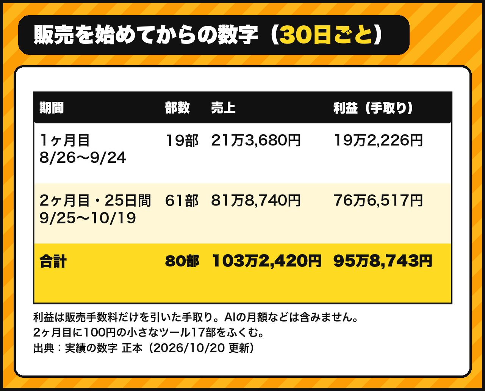
(売上は、販売サイトの手数料を引く前の金額。利益は、手数料を引いた手取りです。出典: 販売台帳より)
教材ごとの合計は、こうです。
| 教材 | 部数 | 売上 |
|---|---|---|
| AI × eBay輸出の教科書 | 43部 | 88万4,480円 |
| レンタルスペース経営の教科書 | 4部 | 7万5,200円 |
| ダンススタジオの教材(セット1部を含む) | 5部 | 6万4,800円 |
| 公式HPメーカー(小さなツール) | 2部 | 1,000円 |
| note切替の拡張(100円の小さなツール) | 17部 | 1,700円 |
| noteから始める「AI×◯◯」コンテンツ販売の教科書(この教科書・Brain) | 9部 | 5,240円 |
| 合計 | 80部 | 103万2,420円 |
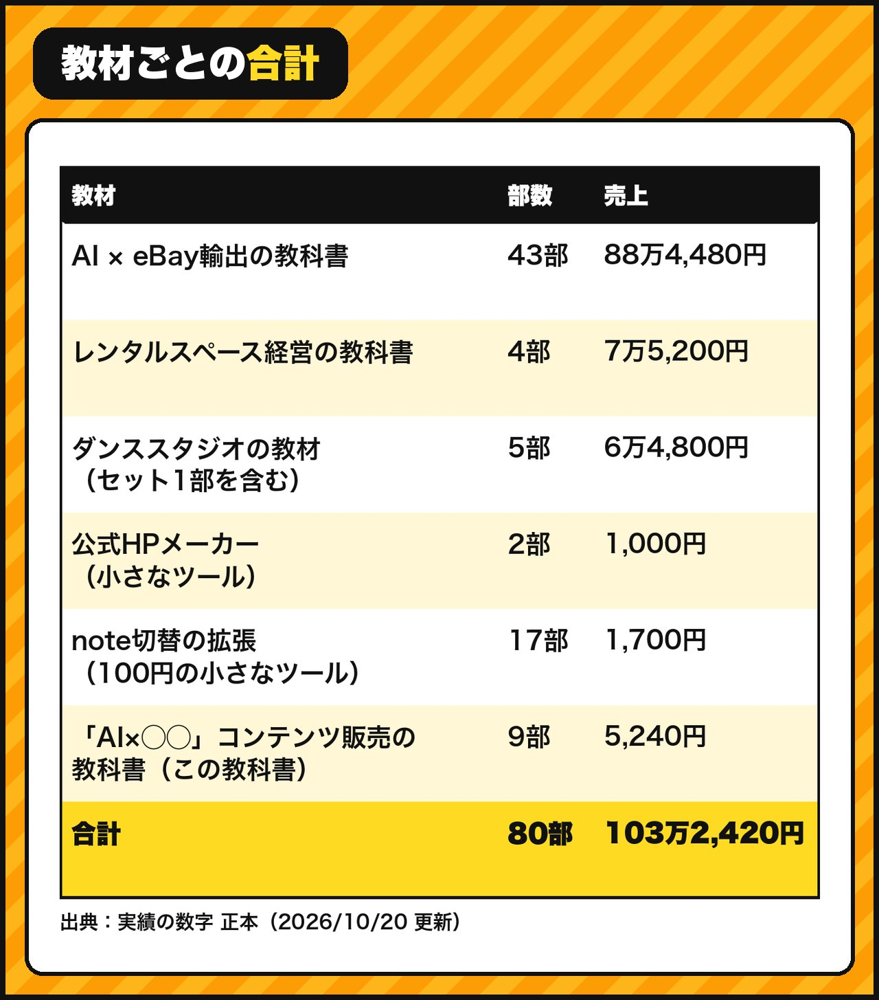
販売サイトごとに見ると、こうです。
| 販売サイト | 1ヶ月目 | 2ヶ月目 |
|---|---|---|
| 直販(自サイト) | 5部・7万7,000円 | 27部・60万1,400円 |
| note | 7部・7万5,660円 | 7部・18万600円 |
| Brain | 7部・6万1,020円 | 27部・3万6,740円 |
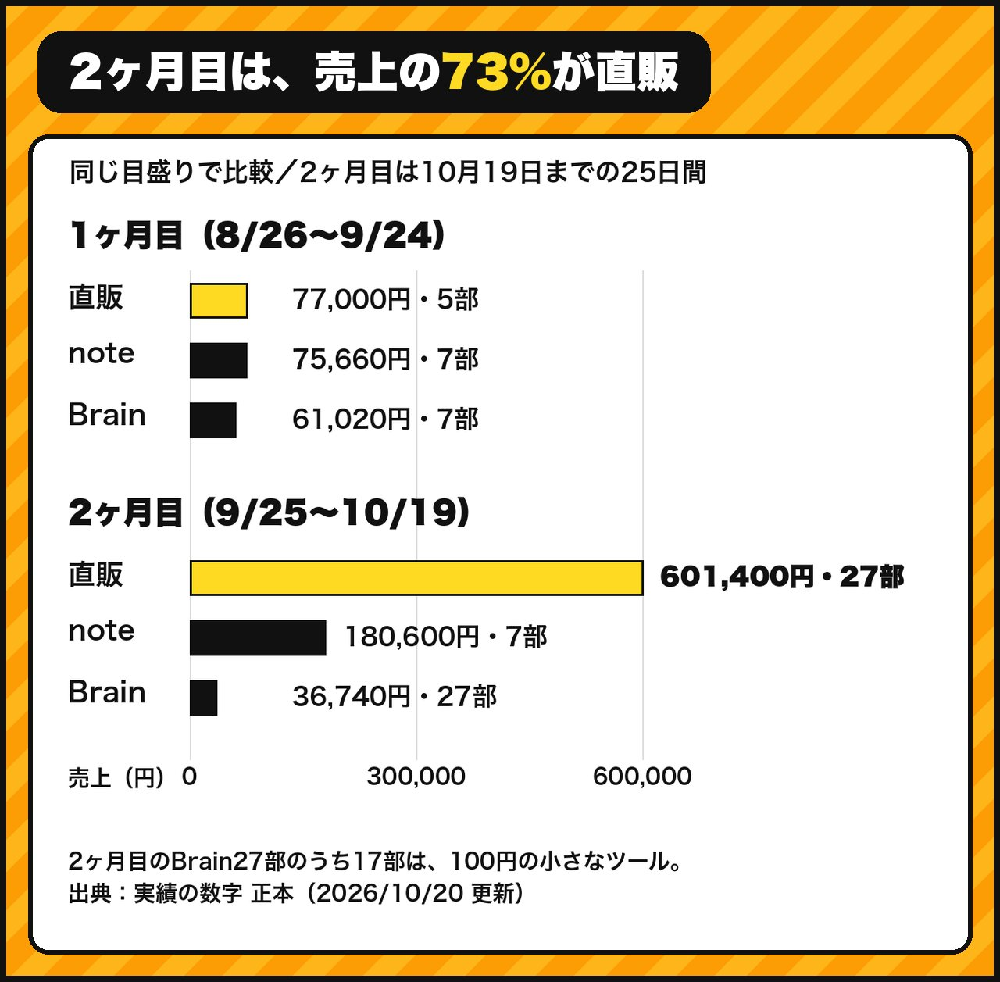
2ヶ月目は、金額の73%が直販でした。 (直販を始めたのは9月16日なので、1ヶ月目はまだ5部です) 理由は、0-2のSTEP4で書きます。
フォロワーは、10月19日で約540人。 まだ、数百人です。
フォロワーが数百人でも、教材は売れます。 中身が自分の経験なら、同じことで困っている人に、ちゃんと届くからです。
0-2 AIでコンテンツ販売をする7ステップ
全体の流れは、7ステップです。 ◯◯がなにでも、順番は同じです。
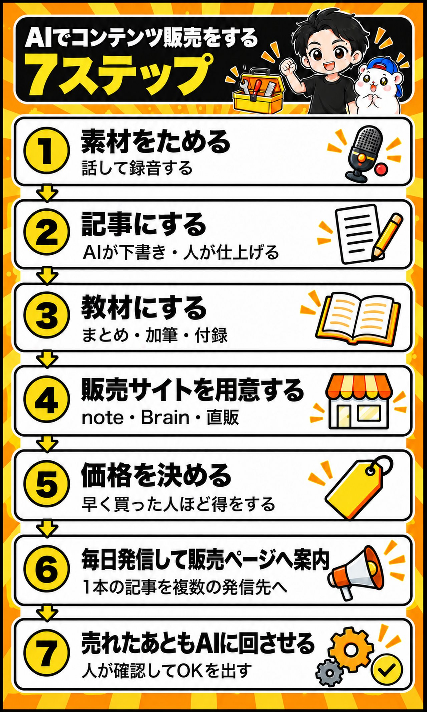
STEP1 素材をためる(話して録音する)
書くより話すほうが、早く集まります。 書くより話すほうが、継続もしやすい。 その日にやったこと。うまくいったこと、いかなかったこと。ポイントだと思ったこと。 これを、スマホに録音しておきます。 運転しながら、朝の準備をしながら、ちょっとした空き時間に。 机に向かわなくてかまいません。
この録音を「素材」と呼びます。 料理が素材から作られるように、同じ録音から、記事も、SNSのポストも、教材も作れます。 素材がたまるほど、書くことに困らなくなります。
ぼくは、毎朝散歩をしながら録音しています。 健康にもいいし、朝日も浴びられるからです。 文字起こしした録音は、87本。 これが、そのまま教材のストックです。
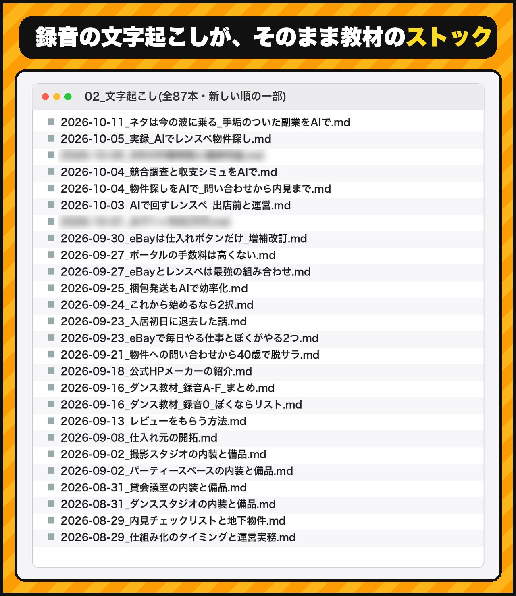
STEP2 記事にする(AIが下書き、人が仕上げる)
録音をAIに渡して、記事の下書きを書いてもらいます。 人がやるのは、直して仕上げることだけです。
そのときのコツは、3つです。
- 直したところを、AIに覚えさせる: 人間が手直しすると、AIが下書きと見比べて、直されたところを「ルール帳」というファイルに書き足します。次の下書きから、そのとおりに書いてきます。人間が直す量は、だんだん減ります
- 数字は、1つのファイルからだけ取らせる: 記事ごとに書かせると、数字が少しずつずれます。信頼性にかかわることなので大事です
- 使わない言葉を決めて、AIに点検させる: 誤解されやすい言葉や、自分らしくない言い回しを、公開の前にAIが見つけてくれます
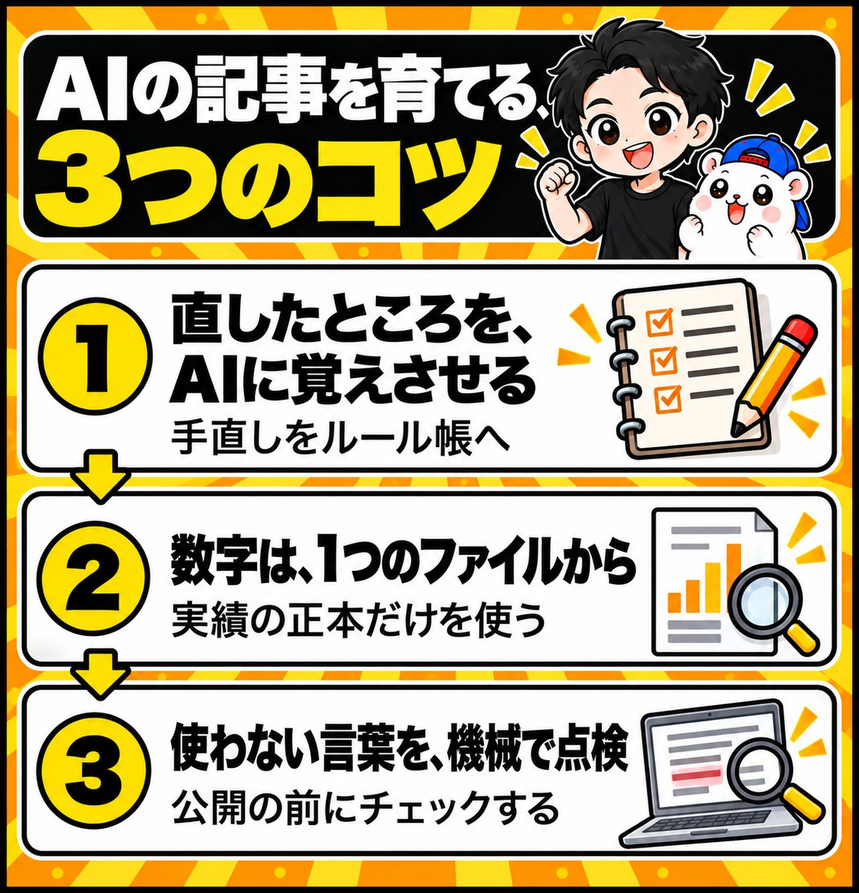
うちは、Claude Code(AIに、パソコンの作業をまるごと任せられるツール)で回しています。 ブログは、150本以上になりました。
こちらが実際のブログです。
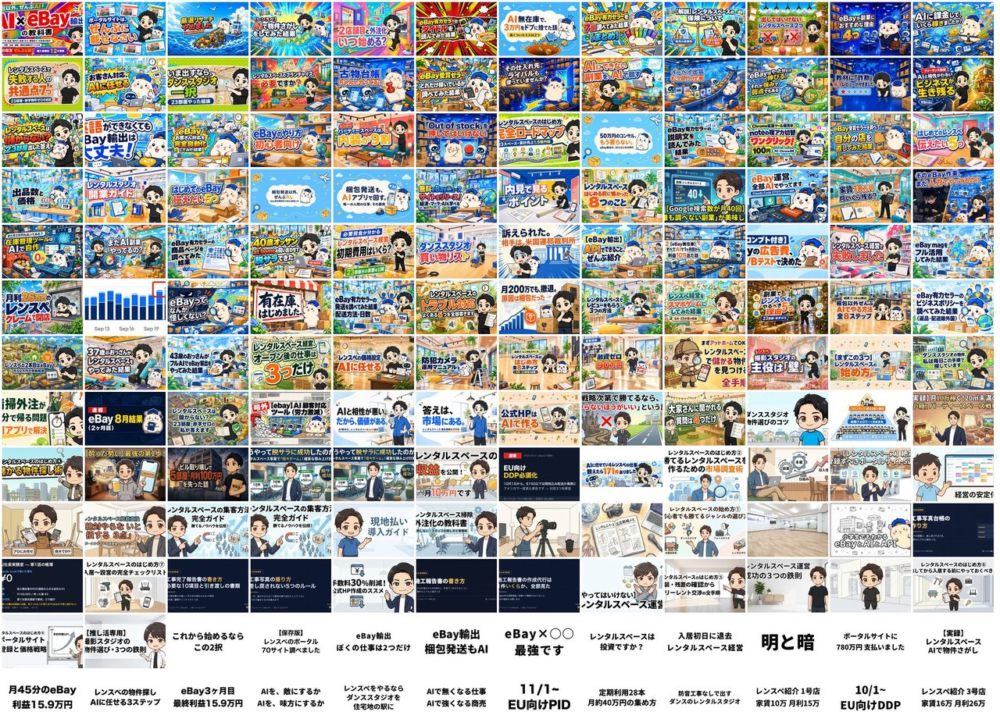
STEP3 教材にする(まとめて、加筆し、付録をつける)
記事が30本、50本とたまると、同じテーマの記事が、もう章のようにそろいます。 それをまとめて、足りないところは、録音するか書いて足します。
各章には、図解・実例・手順・AIへの具体的な頼み方も入れます。
付録もつけます。 自分が毎日使っているツールを、ほかの人のパソコンでも動く形に直したものです。 読むだけではなく、ツールとして使えるようにします。 バッグが付録の雑誌や食玩のイメージです。
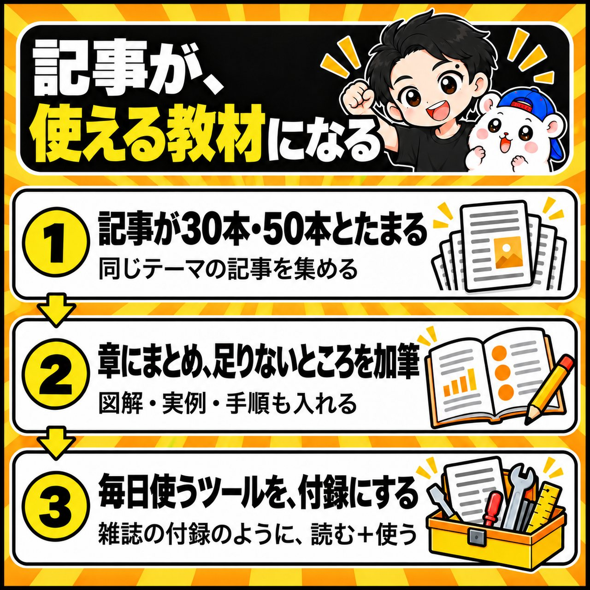
AIの使い方には、各サービスの規約も添えます。 AIでの自動化を制限しているサービスもあるからです。 規約で分からないところは、窓口に問い合わせて、文書で答えをもらいます。
例えば、ぼくがやっているeBayでは「公式の連携の仕組みを通してAIに出品させるのはよい。AIに画面を見せて調べさせるのはだめ」という答えをもらい、その範囲で教材にしています。
STEP4 販売サイトを用意する(note・Brainと、直販)
販売サイトは、2種類あります。
- note・Brain: 始めやすい。もともと買う人が集まっているので、見つけてもらいやすい
- 直販(自分のサイト): 手数料が安く、販売ページを自由に作れる
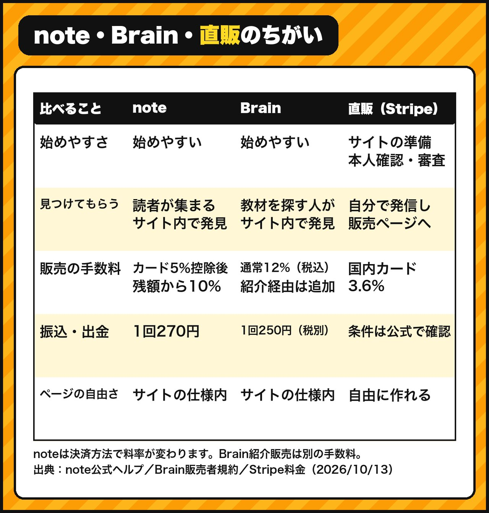
どちらでも、いちばん効くのは販売ページの形です。 教材の最初の章を、まるごと無料で見せます。
どんな人が、どんな実績で、何を書いているのか。 買う前に、ぜんぶ読める。 「この人の続きを読みたい」と思った人だけが、購入ボタンを押します。
いまあなたが読んでいる第0部も、この形です。
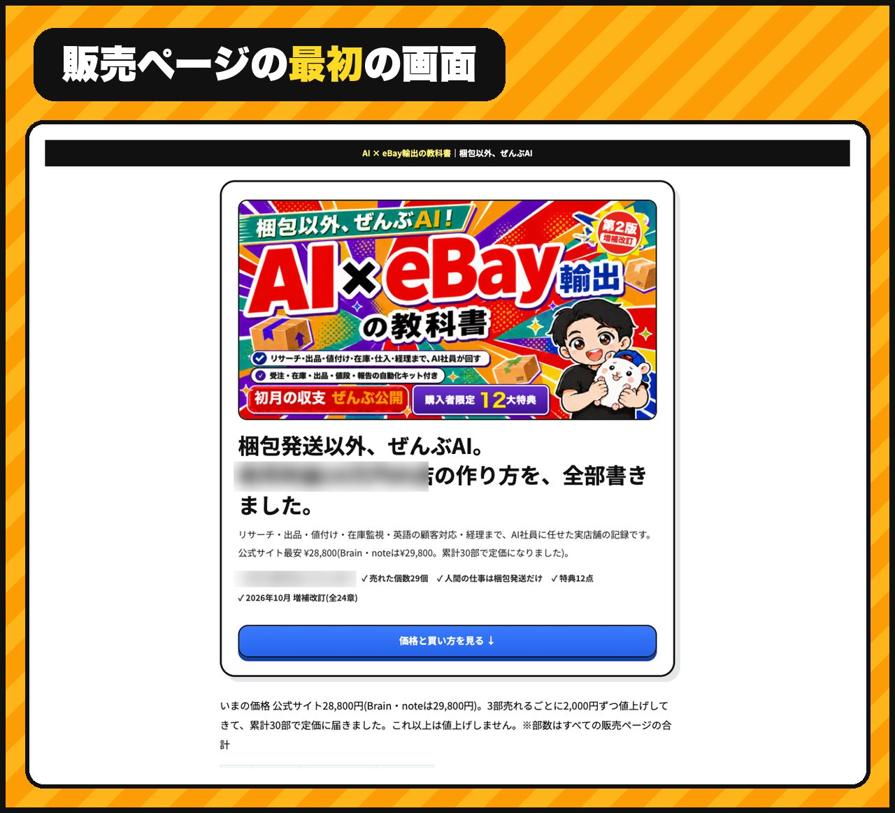
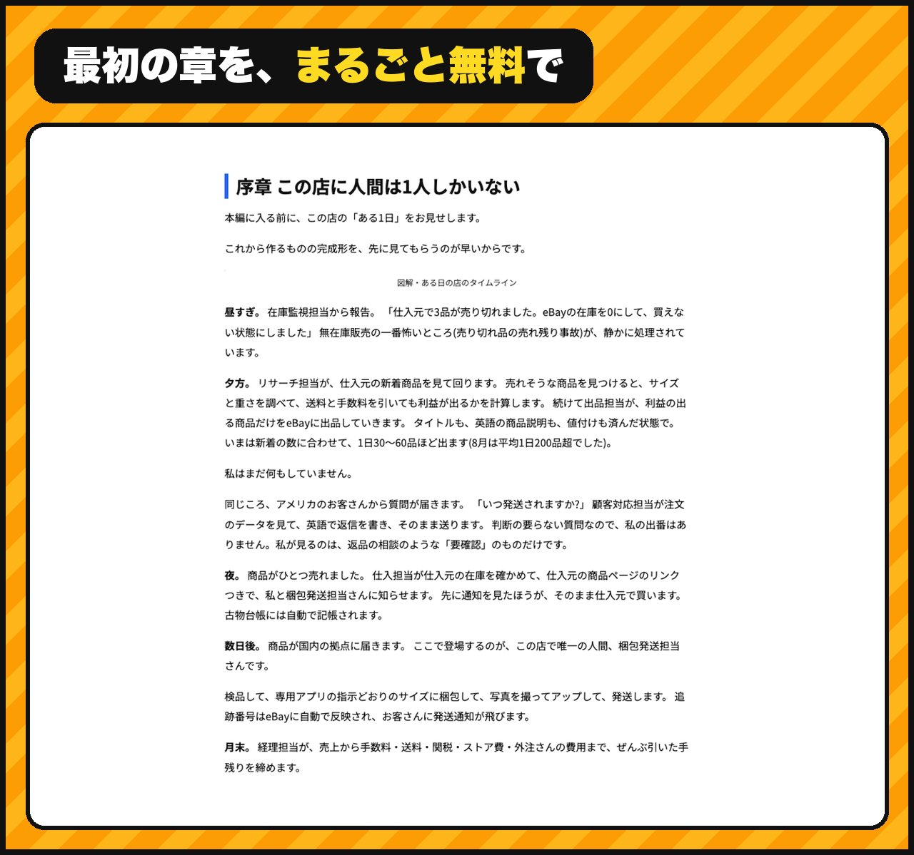
直販のカード決済には、Stripe(ネットでカード払いを受けつけるサービス)などを使います。 支払いのあと、受け取りのリンクが自動でメールで届く。この仕組みも、AIに作ってもらえます。
登録に手間がかかるので、最初はnote・Brainだけでもかまいません。 それでも、直販には挑戦する価値があります。 1回作れば、次の教材にも、ほかの事業にも使えるからです。
うちは、直販・note・Brainの3か所で売っています。 2ヶ月目は、金額の73%が直販でした。
STEP5 価格を決める(早く買った人ほど得をする)
価格は、早く買ってくれた人ほど得をする形にします。 最初は安く出して、売れた数に合わせて上げていきます。
最初に買う人は、評判も実績もまだない教材を、信じて買ってくれる人です。 だから、そのぶん安く手に入るようにします。
売る側も、早く売れはじめてほしい。 最初の何部かが売れると、感想と実績がそろって、次の人も買いやすくなります。
買う人も、売る人も得をする。 Win-Winの形です。
うちは、3部売れるごとに、価格の段を1つ上げています。 いちばん売れている教科書は、1部8,820円から、上限の2万9,800円まで上がりました。 それでも、2ヶ月目(10月19日まで)に売れた61部(100円のツール17部をふくむ)のうち28部が、この教科書です。
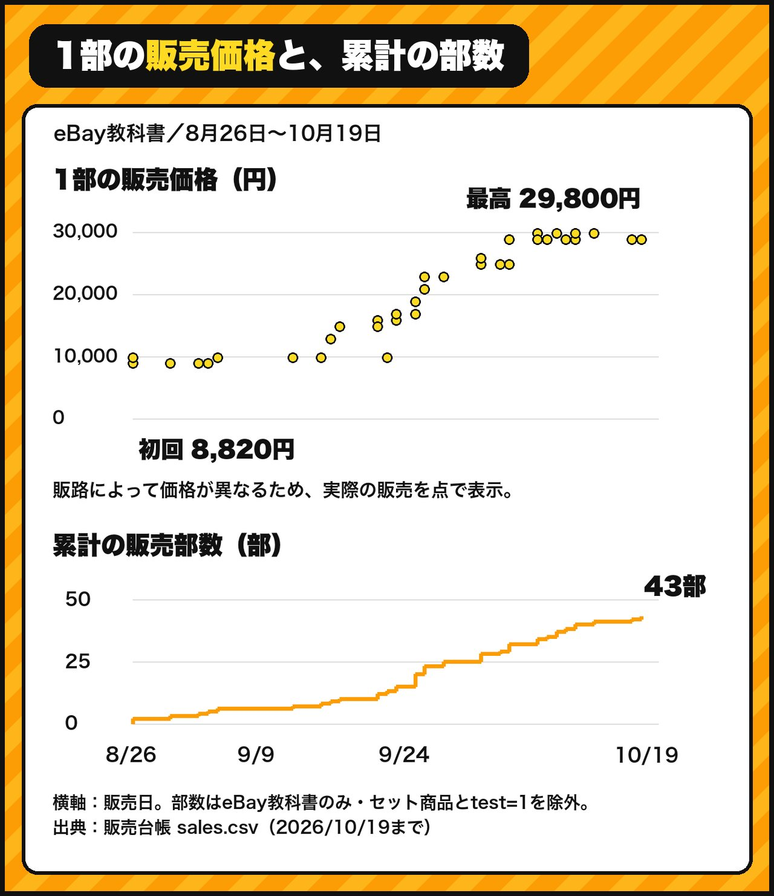
STEP6 毎日発信して、販売ページへ案内する
教材は、作っただけでは売れません。 毎日発信して、読んだ人を販売ページへ案内します。
基本は、1本の記事を、いくつもの場所に出すこと。 書くのは1回でも、届く場所は何倍にもなります。 SNSのポストは、前の晩にAIが翌日分を作り、時間になったら自動で出せます。 いいね・リプ・フォローは、AIが候補を出すところまで(理由は0-8で)。
売るための発信で、効くことは3つです。
- 教材の「予告編」になる記事を出す: 「買うと何が手に入るか」がひと目で分かる記事です。目次をそのまま記事にしたようなものが効きます
- 記事に、販売ページへのリンクを付ける: 読み終えた人が、そのまま販売ページに来られます
- 伸びる記事と、売れる記事を分けて考える: たくさん読まれる記事が、売れる記事とはかぎりません。伸びる記事で人を集め、予告編の記事で販売ページへ案内します
うちの発信先は、5つです。
- ブログ: 毎日1本以上、散歩の録音を記事にする、または記事のストックの再構築
- X記事(長文): ブログを転載
- note: ブログを、無料の記事として転載
- Substack(メールマガジンのサービス): ブログを転載
- Xポスト(短文): ブログをもとにポストを作成して投稿
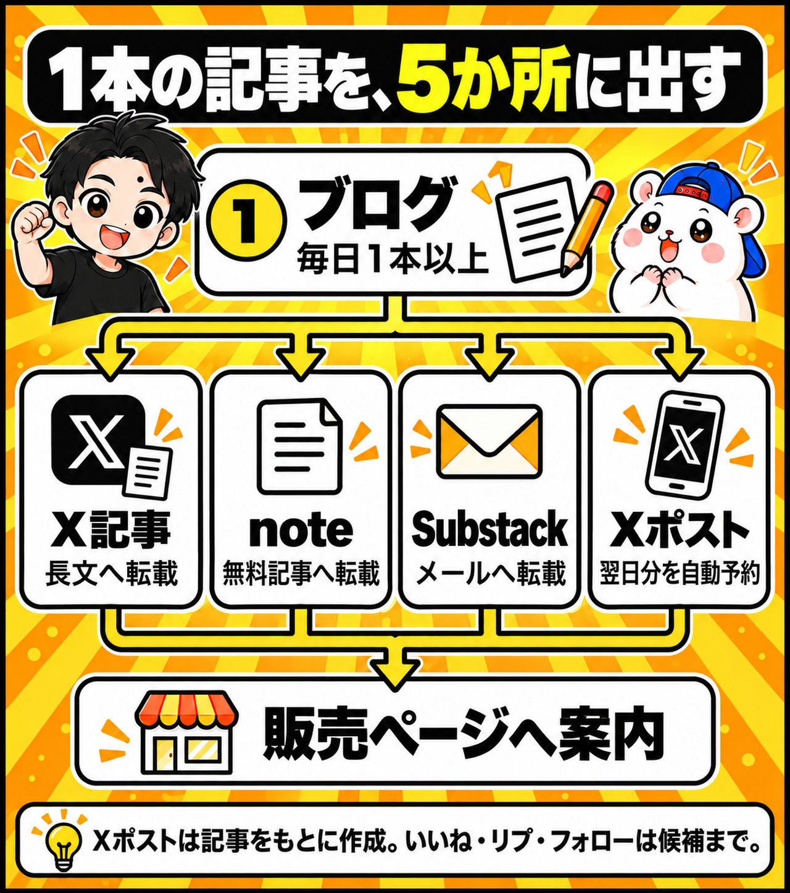
STEP7 売れたあとも、AIに回させる
売れたあとの作業も、AIに任せられます。
- 販売サイトごとの売上を、1つの台帳にまとめる
- 売れたら、スマホに「売れました」と届く
- 部数を数えて、値上げの時期を知らせる
- 質問への返信の案を作る
- エラーがないかチェックして、1通の日報にまとめる
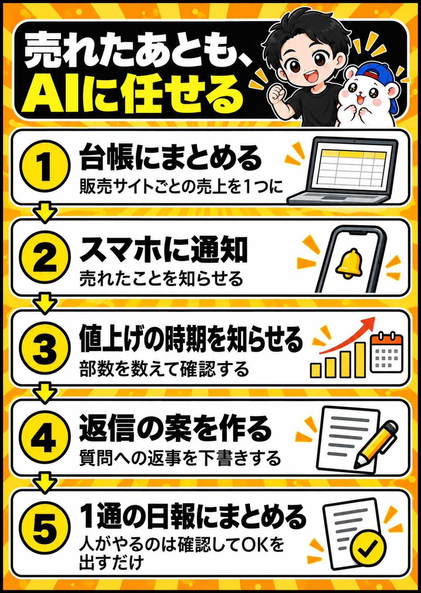
人がやるのは、確認してOKを出すことだけです。
0-3 つまずきやすいところ2つ(うちの失敗つき)
付録(ツール)の不具合
付録のツールは、自分のパソコンで動いても、買った人の環境で動くとはかぎりません。 例えば、複数のファイルを1つにまとめたzipは、ファイル名が文字化けして、中身が読めなくなることがあります。
だから、販売する前に、AIに何度も確かめさせます。 買った人と同じ道(配る場所からダウンロードして、開いて、動かす)を、AIに何度も通らせます。
そして、最後は自分の目で確かめてから、販売します。 AIが「問題なし」と言っても、最後のひと確認は人がやります。
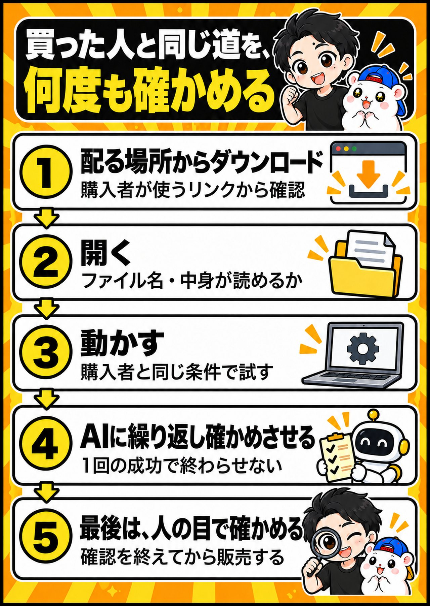
これはぼくの教訓です。 最初の教材販売から9日後、Brainに★1のレビュー。「文字化け、ファイルが空、詐欺」。 原因は、特典のzipのファイル名の文字化けでした。 すぐに直して配り直し、2日後には別の方から★5をいただきました。
この確かめ方は、教科書の付録にそのまま入れています。
AIに任せるがゆえに、エラーに気付かない
AIに任せると、自分で手を動かさなくてすみます。 そのぶん、仕組みが止まったり、思わぬ動きをしたりしても、気づくのが遅れます。
例えば、販売ページへのリンクつきのポスト。 販売ページには、SNSや記事に付けたリンクを通って人が来ます。 自動の投稿で、このポストが知らないうちに出なくなると、人が来なくなり、売れなくなります。 手で投稿していたり、人が毎日確かめていたりすれば、すぐ気づくことです。
うちはこれで、販売ページに来る人が1週間で42%減り、部数も週12部から7部に減りました。
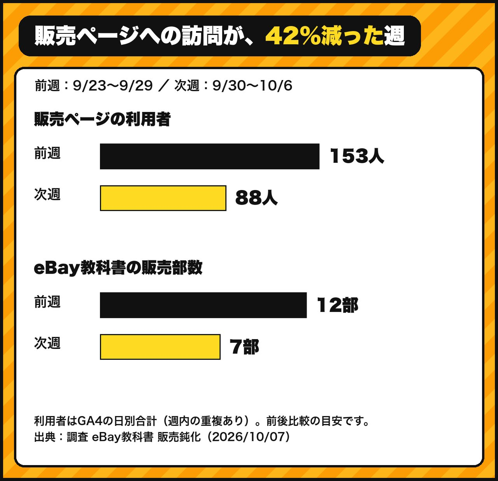
だから、AIに任せた仕事ほど、結果を毎日確かめます。 エラーがないかをチェックして、1通の日報にまとめさせています。 もしエラーがあれば、AIに自走で修正させます。
0-4 この教科書で手に入るもの
この教科書で渡すのは、知識だけではありません。 AIで、コンテンツ販売が毎日回る仕組みです。
読み終えて、仕組みが回り始めると、1日はこうなります。
- 朝: その日のXのポストが、もうできています。前の晩に、AIが記事から翌日分を作って、時刻どおりに出る予約までしてあります
- 朝: いいね・リプ・フォローしたい相手の候補と、リプの案が届いています。見本にしている発信者の新着も、1枚のノートにまとまっています
- すき間の時間に: 運転しながら、朝の準備をしながら、散歩しながら。やったことや考えたことを、10分ほどスマホに録音します
- 録音のあと: 記事の下書きが、もうできています。直して「清書できた」と言うと、直したところがルール帳に足されます
- 清書を渡したら: ブログ・note・X記事・Substackへの公開まで、AIがやります。X記事は毎日、決まった時刻に自動で公開されます
- 売れたとき: スマホに「売れました」と届きます。台帳に記録されて、次の値上げまで残り何部かも分かります
- 夜: 1通の日報で、今日の定期の作業が全部動いたかが分かります
どれも、ぼくがいま実際に回している仕組みです。 人がやるのは、話すこと、直すこと、OKを出すこと。 ほかは、AIに任せています。
この教科書では、この仕組みを、あなたの◯◯で作ります。 本文には、「どうやるか」を手順とAIへの頼み方で書きました。 付録には、ゼロから作らずにすむツールを入れました。
本文と付録
- 本文(本体): やり方と判断の基準。うちの実例(画面・数字・失敗)・手順・AIへの頼み方・つまずきやすいところ
- 付録(24のツール): 本文の手順を早く回すための見本ツールと、AIに頼んでも手に入らないもの(完成形の見本・データ・失敗の記録)
付録は、ぼくが毎日使っている実物を、あなたのパソコンでも動く形に直したものです。
店の名前・アカウント名・フォルダの場所などは 【あなたの値】 という欄になっていて、そこを書きかえて使います。
入れただけで、全部が動くわけではありません。
X APIやStripeなどの登録と、【あなたの値】 の書きかえが要ります。やり方は本文に書いています。
動作は、Claude Codeで確かめています。
ひとつ、先に書いておきます。 付録は、はじめは「下書きまで」で動く形にしてあります。
- Xのポスト: 朝に読んで、出したくない案をボツにすれば、残りが時刻どおりに自動で出ます。Xの公式の仕組み(API)を使う形で、自分の投稿の予約はXのルールで認められています
- ブログ・note・X記事・Substack: 付録では、公開ボタンはあなたが押します。うちは公開までAIに任せていますが、公式の仕組みがない媒体では、AIにブラウザを操作させることになります。どこまで任せるかは、各サービスの規約を確かめたうえで、自己責任で決めてください
- いいね・リプ・フォロー: AIが候補を出すところまでです。Xのルールで、自動のいいねは禁止されています
あなたの名前で出るものだからこそ、最初は自分の目で確かめてから出します。
0-5 付録|毎日の流れに、そのまま使える24のツール
付録は、毎日の流れの順に、5つに分けてあります。 どれも、ぼくが毎日動かしているツールを、あなたのパソコンでも動く形に直したものです。 完成形の見本(実際のルール帳・40部売れた販売ページ・発信のデータなど)も、いっしょに付けています。 とくに使ってほしいのは、★の6つです。
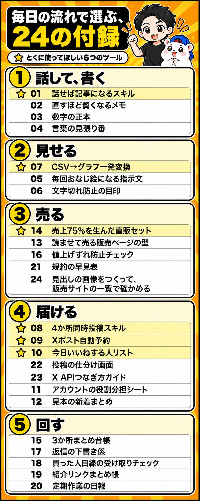
1. 話して、書く
(0-2のSTEP1・2)
★ 話せば記事になるスキル(付録1) 録音を入れて「録音を入れた」と言うだけで、文字起こしから記事の下書きまでをAIが進めます。 直したところはルール帳に足されるので、使うほど、あなたの書き方に近づきます。
- いっしょに使うツール: 直すほど賢くなるメモ(付録2)・数字の正本(付録3)・言葉の見張り番(付録4)
2. 見せる
(0-2のSTEP3)
★ CSV→グラフ一発変換(付録7) CSV(表計算のデータ)を入れると、グラフと表の画像ができます。 表はnote・X記事・Substackに貼ると崩れるので、画像にして貼ります。数字は台帳から入れるので、画像生成で数字がずれることもありません。
- いっしょに使うツール: 毎回おなじ絵になる指示文(付録5)・文字切れ防止の目印(付録6)
3. 売る
(0-2のSTEP4・5)
★ 売上73%を生んだ直販セット(付録14) 自分のサイトで教材を売り、支払いが済んだら、受け取りのリンクが自動でメールで届く仕組みです。 うちでは、2ヶ月目の売上の73%が、この直販でした。
- いっしょに使うツール: 読ませて売る販売ページの型(付録13)・値上げずれ防止チェック(付録16)・規約の早見表(付録21)・一覧で選ばれる見出しの画像スキル(付録24)
4. 届ける
(0-2のSTEP6)
★ 4か所同時投稿スキル(付録8) 1本の記事を、ブログ→note→X記事→Substackに出すまでを手伝います。 貼ったあとに、元の原稿と照合してから渡してくれます(画像の数・リンクのカード・崩れた行)。
★ Xポスト自動予約(付録9) 公開した記事から、翌日分のポストを夜のうちに作り、時刻どおりに予約投稿します。 朝に読んで、出したくない案をボツにするだけ。本数に上限はありません。
★ 今日いいねする人リスト(付録10) 毎朝、いいね・リプ・フォローしたい相手の候補と、リプの案が届きます。 押す・送るのはあなた。Xのルールを守ったまま、毎日ていねいにつながれます。
- いっしょに使うツール: 投稿の仕分け画面(付録22)・X APIつなぎ方ガイド(付録23)・アカウントの役割分担シート(付録11)・見本の新着まとめ(付録12)
5. 回す
(0-2のSTEP7)
- ツール: 3か所まとめ台帳(付録15)・返信の下書き係(付録17)・買った人目線の受け取りチェック(付録18)・紹介リンクまとめ帳(付録19)・定期作業の日報(付録20)
つまずき・直し方集(122件)
どこでつまずいても、まずここを見てください。 うちで実際に起きた失敗42件と、つまずきやすいところ80件。 1件ずつ、直し方の手順と、そのまま貼れるAIへの指示文をつけています。 「詐欺です」と書かれたzipの文字化け、販売ページへのリンクが消えた週、下書きのままたまった記事なども入っています。
見本ツール24点の一覧
- 話せば記事になるスキル(録音→下書きスキル): スマホに話した録音から、記事のAI下書きを作るところまでを、AIにまるごと任せるスキル
- 直すほど賢くなるメモ(ルール帳のひな形): あなたが下書きを直したところを、AIがルールにして書きためていくひな形。AIは毎回これを読んでから書きます(差分学習)
- 数字の正本(実績の数字の正本): 記事・ポスト・販売ページで使う実績の数字を、1つのファイルだけに書いておくひな形
- 言葉の見張り番(言葉チェッカー): 原稿から「使わないと決めた言葉」を探して、どの行の何を何に言い換えるかを出す小さなツール
- 毎回おなじ絵になる指示文(画像の指示文セット): 毎回おなじキャラ・おなじテイストで画像を作るための指示文と、小さなツール3つ
- 文字切れ防止の目印(見切れ確認): ヘッダーやアイキャッチの文字が切れていないか・アイコンに隠れていないかを、目印つきの画像で確かめるツール
- CSV→グラフ一発変換(グラフ・表の画像化): CSV(表計算のデータ)を入れると、グラフ(棒・折れ線)と表の画像ができるツール
- 4か所同時投稿スキル(全媒体公開スキル): 1本の記事を、ブログ→note→X記事→Substackに出すまでを手伝うスキル(公開ボタンはあなた)
- Xポスト自動予約(Xポスト翌日分づくり): 公開した記事から翌日分のポストを夜のうちに作り、時刻どおりに予約投稿するツール(本数の上限なし)
- 今日いいねする人リスト(いいね・フォロー・リプの候補リスト): 毎朝、いいね・リプ・フォローしたい相手の候補と、リプ案をリストで出すツール(押す・送るのはあなた)
- アカウントの役割分担シート(複数アカウント送客シート): 専門のアカウント(入口)に集まった人を、本人のアカウント(出口)へ流すための設計シート
- 見本の新着まとめ(定点観測ルーティン): 見本にしている発信者の新着を、毎朝AIが集めて1枚のノートにまとめるツール
- 読ませて売る販売ページの型(販売ページの型): 最初の章を、販売ページで無料で全部見せる型のひな形
- 売上73%を生んだ直販セット(Stripe直販+自動納品セット): 自分のサイトで教材を売り、支払いが済んだら受け取りリンクが自動でメールで届くしくみのひな形
- 3か所まとめ台帳(販売台帳+売れたら通知): 直販・note・Brainの販売を1つの台帳にまとめて、売れたらスマホに知らせるツール
- 値上げずれ防止チェック(値上げの段+表示点検): 「3部売れるごとに値上げ」を、ずれずに回すための価格の正本と点検のツール
- 返信の下書き係(購入者対応の返信案): 買った人からの問い合わせに、AIに返信案を作らせるための型と指示文(送るのはあなた)
- 買った人目線の受け取りチェック(特典の配信チェック): 特典のファイルを、買った人の手元で開ける形で作り、配る場所から取ってきて確かめるツール
- 紹介リンクまとめ帳(紹介リンク台帳): 実際に使っているツール・読んだ教材を紹介するときのリンクと書き方を、1か所にまとめるひな形
- 定期作業の日報(ルーティン日報): AIの定期タスクのうち、どれが動いて、どれが失敗したかを、1通の日報にまとめるツール
- 規約の早見表(規約チェックリスト): 媒体ごとに「やってよいこと・いけないこと」を確かめるチェックリストと、自己責任の書き方
- 投稿の仕分け画面(投稿レビュー画面): AIが作ったXの投稿の案を、ブラウザの画面で1件ずつOKかボツにする小さな画面(Xには何も送らない)
- X APIつなぎ方ガイド(X APIの準備): 自分の投稿を予約して自動で出すための、X APIの鍵の取り方とつなぎ方
- 一覧で選ばれる見出しの画像スキル(教材の見出しの画像をつくるスキル): 販売ページの見出しの画像を、7つの条件で設計して文字ごと画像生成で作り、販売サイトの一覧に入れて見え方を確かめるところまで進めるスキル
レビュー特典
Brainでレビューを書いてくれた方に、「探す手間ゼロ!定番の副業を、AIで回す24選」をお渡しします。スマホで読めるページとPDFです。
- 定番の副業24選: せどり・無在庫販売・ネットショップ・ホームページの制作代行のような、教材があふれている副業を、AIで回す提案。全部でなくていいので、「一部分だけAI化するなら(いま月額のツールや外注にお金を払っている所)」もつけました
- AIでつくれること24選: 絵・作曲・動画編集・デザインのような、前は技術が必要だった制作の仕事を、AIでつくって稼ぐ提案
- 切り口を変える表: 教材がもう多い分野でも、「AIっぽくない画像生成」「新しいAIツールで声を作る」のように切り口を変えれば、新しいニーズが生まれる。Webツール・Chrome拡張・アプリにして出す形もふくめて、切り口を13個と、自分の切り口をAIと考える頼み方
どれも、Brainにある教材の数・購入数・題名にAIが入っている教材の数・始めやすさを書いてあります。ページの数字は、ボタンで最新のものに読みこみ直せます。
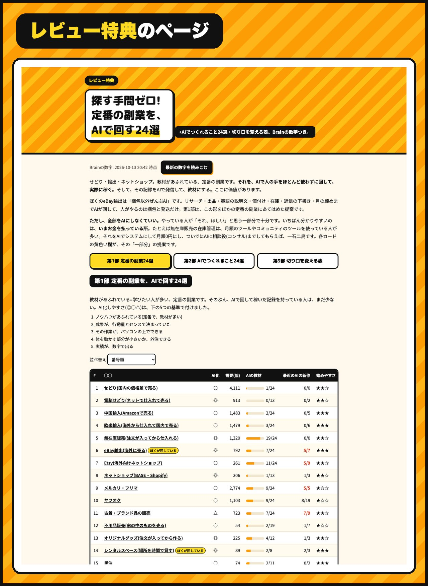
質問とアップデート
質問は、あなたのAIにしてください。この教科書の全文をAIに読ませるためのファイルも、付録に入れてあります。 内容は、第2版で無料でアップデートします。すでに買った人に、追加料金はかかりません。
0-6 本文の目次
本文は、やる順番に7部あります。 各部で、使う付録の番号も書いています。
- 第0部(無料)フォロワーゼロから、利益95.8万円の全記録: いま読んでいるところです
- 第1部 ネタを決めて、ツールをそろえる(1日目): 何を売るかは「AI×◯◯」で決める(知りたい人が多い稼ぎ方×AIの使い方がまだ出回っていないところ・実績は成果物でもいい)。メインのAI(Claude CodeかCodex)を入れるところから。使うAIとサービスの役割、毎月かかるお金を先に全部
- 第2部 素材をためる(毎日10分): 録音→文字起こし→AIの下書き。数字は1か所からだけ取る。言葉チェッカーで点検(付録1・3・4)
- 第3部 画像をつくる・清書する: アイキャッチ・図解・グラフ・表・ヘッダー。キャラの見た目を固定して、文字を1文字ずつ照合する。最後に自分の手で清書して、直したところをAIがルール帳へ(付録2・5〜7)
- 第4部 全媒体に出す: 1本の記事を、X記事・note・Substackへ(ブログがあればブログにも)。Xはポストに加えて記事を毎日1本(実際の表示の数字つき・Xプレミアムの入り方)。記事から翌日分のポストを作って予約する(付録8・9・22・23)
- 第5部 SNSを育てる(押すのは本人): いいね・フォロー・リプの候補リスト、複数アカウントの送客、見本の発信者の定点観測(付録10〜12・22)
- 第6部 教材にして売る: 記事をまとめて章にする、販売ページ(第一印象のチェック表)、直販の決済と自動納品、note・Brainへの入稿、値上げの段、発売の段取り、規約と自己責任の書き方、Brainで売れる教材の共通点(新着2,491本の調べ)(付録9・13・14・16・21・C)
- 第7部 売れたあとも、AIに回させる: 販売台帳と通知、購入者対応、特典の配信チェック、紹介リンク、ルーティン日報(付録15・17〜20)
- 第8部 動画と講座(第2版で追加): 固定動画・ショート・YouTubeの長い動画・Udemy。いま、ぼく自身がアカウントを育てている途中です。結果が出たら第2版で足します
第8部は、すでに買った人には追加料金なしで届けます。
0-7 やり方は、イケハヤさんから学びました
ここまでのやり方は、ぼくが考え出したものではありません。 副業時代から7年ほど、イケハヤさんの発信を追いかけています。
録音で素材をため、ブログ・X・教材を作るやり方は、『シン・X攻略の教科書』で教わりました。 AIに仕事を任せ始めたきっかけは『Claude Codeの教科書』。売り方は『明鏡』で学んでいます。
ぼくがやったのは、教わったことを、自分の本業でそのままやってみたことだけです。 この教科書は、その記録を、あなたもできる手順にしたものです。 発信の考え方そのものは、下の3冊で学んでください。
▼【PR】ぼくがAIで仕事を任せ始めた1冊(Claude Codeの教科書)
▼【PR】この教科書の発信のやり方を教わった1冊(シン・X攻略の教科書)
▼【PR】イケハヤさんのマーケティングが学べる1冊(明鏡・販売は毎月1日〜5日だけ)
0-8 買わないほうがいい人(【AIでコンテンツ販売を始めたい人専用】)
この教科書は、【AIでコンテンツ販売を始めたい人専用】です。 まちがえて買う人が出ないように、向かない人を先に書きます。
- すぐに稼ぎたい人: 素材がたまり、記事がそろい、教材になるまでには時間がかかります。ぼくも、Xをフォロワーゼロから始めて、教材が売れるまで2か月かかりました
- 自分では何もやらずに、教材だけ作りたい人: 教材の中身は、あなたがAIでやってみせたこと(稼げた数字や、作れたもの)です。中身そのものは、この教科書では作れません。まだ経験がない人は、第1部のとおり、やり方がもう出回っている定番の副業を、AIでやってみるところから始めます
- 直す・押す手間をかけたくない人: AIが作るのは、下書きと候補まで。清書で直す、公開ボタンを押す、いいねやリプを送る。この手間は残ります
- Xの自動いいね・自動フォローをしたい人: Xのルールで、自動のいいねは禁止。大量や攻撃的なフォローも禁止です(2026年10月時点・公式で確かめてください)。この教科書に、それをするツールは入っていません
- スマホだけで完結させたい人: 録音はスマホでできますが、付録はパソコンで動かします
逆に、こんな人に向いています。
- 本業や副業で、人より少し詳しいことがある。または、これからAIで何かをやってみせたい
- でも、文章を書く時間がない
- 教材を作っても、どう売ればいいか分からない
ネタは、AIでやってみせれば作れます。 それを教材にして売るところも、AIに任せます。
0-9 価格と、約束できること・できないこと
価格
noteは4,980円から始めて、3部売れるごとに2,000円ずつ値上がりします(上限は2万9,800円)。直販(公式サイト)は、noteより1,000円安くしています。Brainは発売記念で、100円から2部売れるごとに値上がりします。 早く買ってくれた人ほど得をする形です(理由は0-2のSTEP5)。 第8部(第2版)も、すでに買った人には追加料金なしで届けます。
約束できること、できないこと
最後に、大事なことを書きます。
この教科書は、あなたの売上を約束しません。
95.8万円は、ぼくの8月26日〜10月19日の事実です。 同じ手順でも、同じ数字になるとはかぎりません。 経験も、かけられる時間も、人によってちがうからです。
約束できるのは、3つです。
- やった手順と、そこで決めたことを、ぜんぶ書く(うまくいかなかったことも)
- 数字は、記録にある事実だけを書く(盛りません。悪かった週も書きます)
- 毎日使っているツールを、ほかの人のパソコンでも動く形にして付ける
ぼくが最初に素材を録音したのは、数分の、まとまりのない話でした。 Xも、フォロワーゼロからです。 Xを始めたのは、ほんの2、3ヶ月前のことです。
やったのは、AIを使って◯◯をやって、それをAIで教材にして、毎日発信したということだけ。
あなたの経験で、人によく聞かれることは何ですか? それが、あなたの教材の最初の目次になります。
それでは、第1部で、ツールをそろえるところから始めましょう。